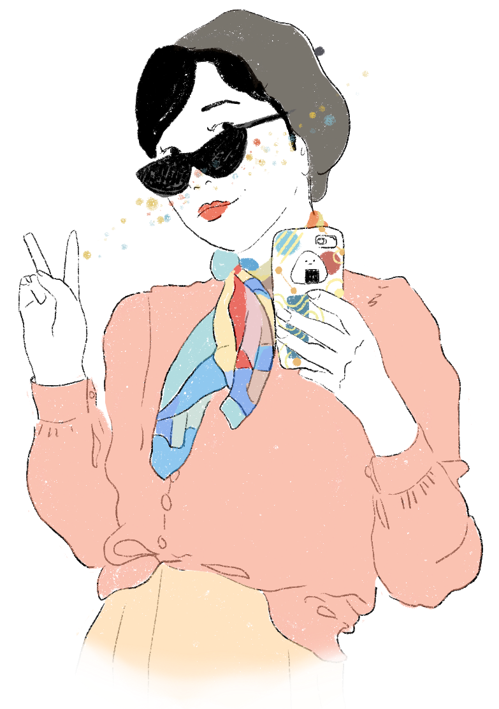

Hello,
I'm Misaki
I'm an User Centred Design graduate at NHS Digital,
and a part-time illustrator.
I care about health inequality, and spend a lot of time listening to people's stories and thinking about thinking.
Before design, I was a news producer for a national TV broadcaster. Prior to that, I was doing a masters in Anthropology at the University of Oxford.
You can reach me via Twitter or Instagram or email me at msakihata@gmail.com
I conducted user research, designed, bought a domain and built the code for this website as a Covid-19 lockdown project. You can read more about my process here.
